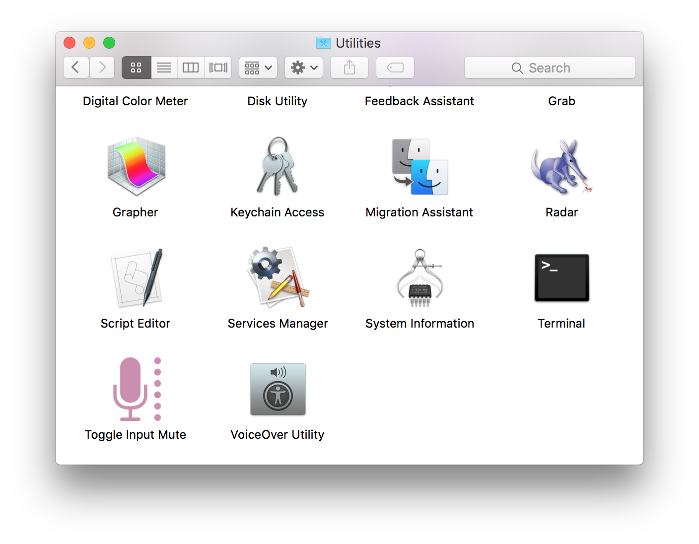
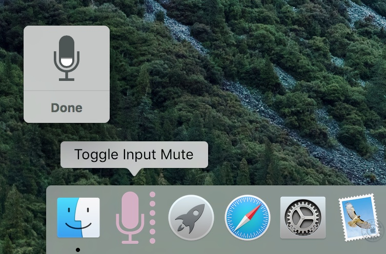
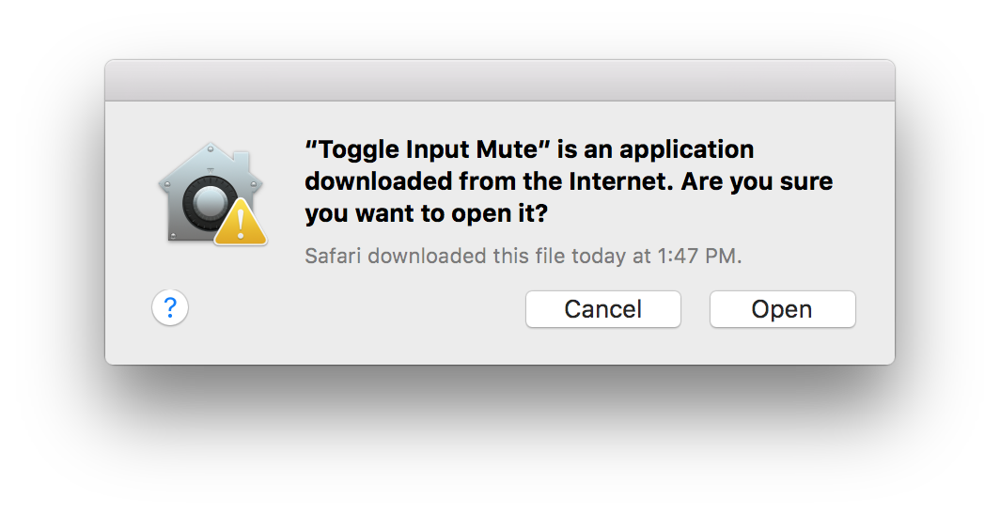

Audio Input Mute Toggle
The best way to use Dictation Commands is to have them always active and listening. However, sometimes you may want to temporarily have the computer stop listening while you answer the phone, or talk to someone. You can easily pause dictation by saying “stop listening” or by pressing the same key you use to turn it on.
Another option is to use the Toggle Input Mute applet to leave dictation active but instead mute the audio input volume. This applet can be quite useful!
DO THIS ►DOWNLOAD and unzip the archive containing the Toggle Input Mute applet, unpack the archive, and place the applet in the Utilities folder in the Applications folder (⬇ see below )

DO THIS ►Drag the icon of the Toggle applet to the left side of the Dock (⬇ see below )

When you click the Toggle applet icon in the Dock for the first time, a security dialog will be displayed (⬇ see below ) click the “Open” button to approve use of the applet.

When the Toggle icon is clicked and the applet run, you will hear a sound that indicates the mute state. The “up” sound indicates that audio input muting is off and you can dictate. The “down” sound indicates that muting of the audio input is on.